背景——三维离散元法
3DEC 是基于离散元法的数值程序。该方法属于非连续介质分析技术。非连续介质与连续介质的区别，在于构成系统的离散物体之间存在接触面或接触。非连续介质方法可按数值公式中表示接触的方式，以及表示离散物体的方式分类。
非连续系统建模的相关方面
数值模型必须表示非连续系统的两类力学行为：（1）不连续面的行为；（2）固体材料的行为。首先，模型必须识别构成系统的离散物体之间存在接触或接触面。按照处理接触处法向运动行为的方式，数值方法分为两组。第一组采用软接触方法，以有限法向刚度表示接触或节理处可测得的实际刚度。第二组采用硬接触方法，认为相互穿透不符合物理实际，并使用算法防止构成接触的两个物体发生任何穿透。
接触假设的选择应基于物理实际，而非数值便利或数学形式优美。同一实际系统可随条件不同表现出不同行为。例如，在摩擦系数为零且应力水平很小时，球体集合最好用刚性接触表示，见 Papadopoulos（1986）。但若在较高应力和摩擦条件下模拟同一集合中的波传播，就必须考虑接触刚度，才能获得正确波速。
上述讨论涉及接触力大小。此外，模型还必须确定接触位置。对于点接触或近似点接触，合力矢量显然作用于接触点；但若两个物体在有限面积内接触，力的作用位置就不那么明显。一种假设是合力作用于穿透体积的质心。Cundall（1988）建议，将该位置视为独立本构属性，并使其取决于两个接触表面的相对转动。即使计算机程序能够将力作用位置与几何变量关联，目前可用来证实任何物理假设的实际试验数据仍很少。
模型必须表示的第二类力学行为，是非连续系统中构成颗粒或块体的固体材料行为。其表示主要分为两类：假定材料刚性，或允许材料变形。当实际系统的大部分变形由不连续面上的运动产生时，刚性假设是合适的。例如，低应力水平下无约束的岩石块体集合，如节理发育岩体中的浅边坡，就属于这种情况。运动主要包括块体滑移和转动，以及接触面的张开和咬合。
若固体材料变形不可忽略，可采用两类主要方法引入可变形性。直接方法将物体划分为内部单元或边界单元，以增加自由度。能够表示的变形复杂程度，取决于划分的单元数量。例如，3DEC 会自动将任意块体离散为四面体常应变网格单元，见可变形块体运动（Deformable Block Motion）。弹性情况下，这些网格单元的公式与常应变有限元相同。网格单元也可遵循任意非线性本构关系。该方法的缺点是，即使仅需简单变形模式，复杂形状物体仍必须划分为许多网格单元。
通过叠加整个物体的若干振型，也可以得到复杂变形模式。例如，Williams 和 Mustoe（1987）用一组正交模态改写单元运动矩阵方程，这些模态可以是也可以不是特征模态。为获得所需复杂程度，可以加入任意数量模态。对于形状复杂但变形方式简单的物体，该方法非常高效，因为仅需少量低阶模态。不过，由于需要叠加，不容易考虑材料非线性。
Shi（1989）在其“非连续变形分析”（DDA）中设计了某种类似方案。该方法采用级数近似，为每个块体提供并叠加逐渐复杂的应变模式。但直接使用应变模态可能存在不一致性（Williams 和 Mustoe 1987）；这一评价也适用于 Cundall 等（1978）的“简单可变形”单元。
非连续系统建模的计算机程序
许多基于连续介质力学公式的计算机程序，例如有限元和拉格朗日有限差分程序，可以模拟岩体常见的材料类型变化和非线性本构行为，但表示不连续面需要基于非连续介质的公式。现有多种有限元、边界元和有限差分程序提供接触面单元或“滑移线”，能够在一定程度上模拟非连续材料。然而，其计算形式通常受到以下一项或多项限制：第一，使用许多相交接触面时，计算逻辑可能失效；第二，可能没有自动识别新接触的机制；第三，可能仅限于小位移和／或小转动。因此，含接触面单元的连续介质程序，在分析节理岩体地下开挖时适用性有限。
一类统称为离散单元程序的计算机程序，能够显式表示多个相交不连续面的运动。Cundall 和 Hart（1992）给出如下离散单元法定义：计算机程序只有满足以下条件，才能称为“离散单元”程序：
- 允许离散物体发生有限位移和转动，包括完全分离；并且
- 随着计算进行，能够自动识别新接触。
离散单元程序通常包含高效的接触检测与分类算法，并维护能够处理数百或数千个不连续面的数据结构和内存分配方案。
Cundall 和 Hart（1992）将符合离散单元法定义的程序分为以下四大类：
- 离散元程序采用显式时间推进方案直接求解运动方程。物体可以为刚性，或通过细分为单元成为可变形体；接触是可变形的。“静力松弛”是其一种变体。代表程序包括 TRUBAL（Cundall 和 Strack 1979a）、UDEC（Cundall 1980；Cundall 和 Hart 1985；Itasca 2011）、3DEC（Cundall 1988；Hart 等 1988）、DIBS（Walton 1980）、3DSHEAR（Walton 等 1988）和 PFC（Itasca 2008）。
- 模态法对于刚性块体与离散元法相似，但对于可变形体采用模态叠加，例如 Williams 和 Mustoe（1987）。该方法似乎更适合松散堆积的非连续介质；在密集堆积的动力模拟中，显然没有修正特征模态以考虑附加接触约束。代表程序为 CICE（Hocking 等 1985）。
- 非连续变形分析随所用版本不同，假定接触和物体可以为刚性或可变形。通过迭代方案实现无穿透条件；可变形性来自应变模态叠加。相应程序为 DDA（Shi 1989）。
- 动量交换法假设接触和物体均为刚性：两个接触物体在瞬时碰撞时交换动量。可以表示摩擦滑移，例如见 Hahn（1988）。
另一类称为极限平衡方法的程序，也可模拟多个相交不连续面，但不满足离散单元程序的要求。这类程序采用矢量分析，判断块状系统中的任一块体在运动学上是否可能运动并脱离系统。该方法不研究块体系统的后续行为或荷载重分布。全部块体均假定为刚性。Goodman 和 Shi（1985）的“关键块体”理论，以及 Warburton（1981）的矢量稳定性分析，均为此类方法的例子。
Cundall 和 Hart（1992）总结了各种离散单元与极限平衡方法的特征，见下图。由于各程序差异很大，未纳入带滑移线的有限元或有限差分方法。此类某些程序具备下图所示大多数能力，但不能同时具备自动接触检测和一般相互作用逻辑，包括有限转动及块体咬合。
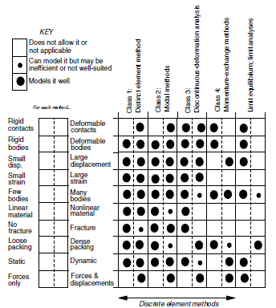
图 1：离散单元法四类方法与极限平衡法的特征（Cundall 和 Hart 1992）。
离散元法发展历程
自 Cundall（1971）首次提出以来，离散元法的公式建立和开发已持续四十余年。图 2（Figure 2） 按时间顺序展示该方法的发展，以及 Cundall 博士与其合作者的相关论文。
离散元法最初用于二维表示节理岩体，但后来也扩展到颗粒流研究，见 Walton（1980）；颗粒材料微观机制研究，见 Cundall 和 Strack（1983）；以及岩石与混凝土裂纹发展研究，见 Plesha 和 Aifantis（1983）及 Lorig 和 Cundall（1987）。许多研究人员建立了节理岩体问题的离散元模型，例如 Bardet 和 Scott（1985）、Butkovich 等（1988）、Cundall（1974）、Hart 等（1990）、Heuzé 等（1990）。二维程序 UDEC（Cundall（1980）；Lemos 等（1985））最初于 1980 年开发，将由不连续面分隔的刚性和可变形物体即块体的计算公式集成到同一程序中。该程序既可进行静力分析，也可进行动力分析。
1983 年，Cundall 博士开始开发该方法的三维版本，最终形成 3DEC（Cundall 1988；Hart 等 1988）。
离散元法的最新发展是二维和三维颗粒流程序 PFC2D 与 PFC3D。它们既可模拟砂等颗粒材料，也可模拟混凝土和岩石等黏结材料。PFC2D 和 PFC3D 通过荷载作用下黏结逐渐断裂模拟破裂（Potyondy 等 1996；Itasca 2008）。
[cs：请更新下图]

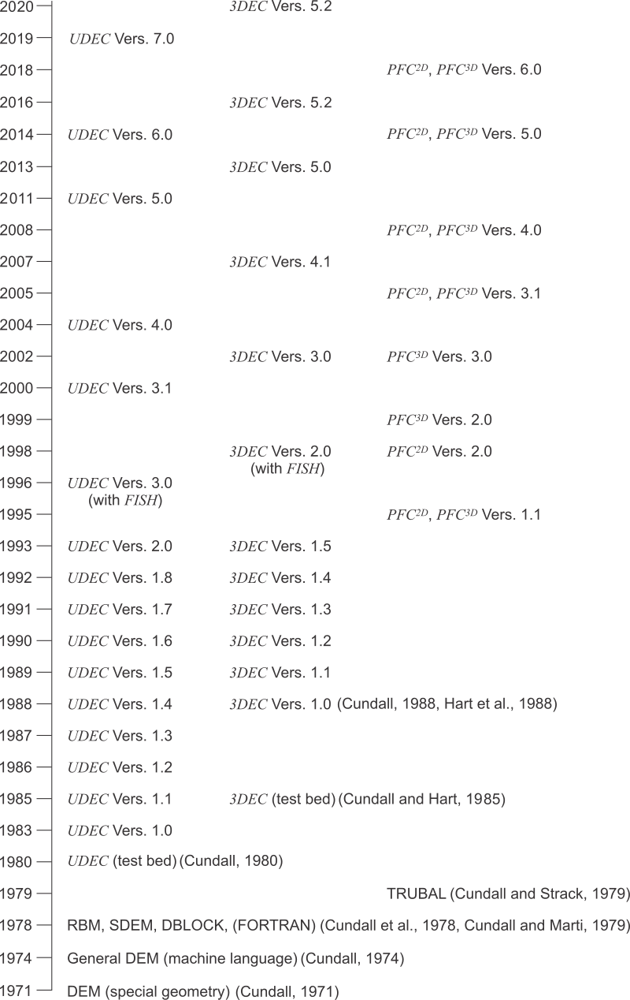
图 2：离散元法发展年表。
三维离散元法的数值公式
本节讨论三维离散元模型的数值公式。主要内容是三维接触检测与表示方案，以及三维运动和相互作用的力学计算。本讨论摘自 Cundall（1988）和 Hart 等（1988）的文献。
三维接触检测与表示方案
离散元法已发展到能够在三维空间模拟非连续系统复杂力学相互作用的阶段。其中一个重要组成部分，是建立稳健、快速的三维颗粒接触检测与分类技术。本节介绍的技术可检测任意形状凸块体或凹块体之间的接触，并表示为接触规定的几何和物理特征，例如三维岩石节理行为。该方法采用高效数据结构，可在个人计算机上快速计算包含数百颗粒的系统。
离散元法用于模拟由离散块体或颗粒组成系统的力学响应（Cundall 和 Strack 1979b）。颗粒形状任意，任一颗粒可与其他任意颗粒相互作用，对颗粒位移或转动不加限制。鉴于这种通用性，必须找到稳健、快速的方法识别相接触的颗粒对，并表示其几何与物理特征，例如涉及的是面、边还是顶点，以及潜在滑移方向。
本节介绍如何对大量块体组成的三维系统快速完成这一任务。一般而言，块体可以为凸体或凹体，其面由任意平面多边形构成。
本节将多次引用数据结构的各种组成部分。数据结构必须能在需要时快速提取相关数据，尤其因为力学计算采用显式方式，通常需要数千次遍历主循环。注意，Key（1986）介绍了三维滑动接触面的数据结构，但其方案要求用户预先识别潜在相互作用。
数据结构
所有数据均存放在一个主数组中，可按需要任意混合存储实数或整数。在 3DEC 中，实数和整数均按 64 位字存储。每个实际实体，例如块体、面或接触，由一个“数据单元”表示，即包含两个或更多连续字的组合。数据单元按需从主数组动态分配，并通过指针接入数据结构。后续两节介绍各类链表和数据单元。不再需要的数据单元，例如已断开接触的数据，会收集到堆中。需要新数据单元时，先检查该堆，再分配新内存。在 3DEC 这类程序中，数据单元的可能尺寸仅有较小范围，因此无须通用“垃圾回收器”，因为新单元经常可从相同长度的废弃单元分配。应注意，链表维护所需计算时间很少：删除或添加一个项目仅需两三次整数赋值，无须重新排序。
数据结构中的每个单元都在主数组中有一个地址，即该数据单元第一个字在主数组中的索引。例如，岩石块体不是用顺序编号或用户指定编号引用，而是用主数组地址引用。用户通常无须了解地址，因为块体、接触等通过坐标识别。
设计数据结构的一个指导原则，是以更多内存存储数据及其指针，换取更少计算时间。内存正迅速变得充足且廉价，而计算机处理速度没有以相同速率增加。3DEC 广泛使用链表。不过，链表中的数据在内存中并非顺序排列，因此不适合依赖矢量处理或流水线获得高速的超级计算机。相比之下，本程序适合利用按三维立方结构连接的并行处理器机器。下文描述的空间胞元逻辑可自然划分程序数据空间。每个处理器可负责一个或多个胞元及其中颗粒。颗粒运动时，将其重新映射到相邻胞元，并在必要时移交相邻处理器。跨处理器边界的相互作用即接触，由处理器间高速数据总线处理。假定每个处理器有足够本地内存，容纳其负责的 3DEC 胞元全部相关数据。3DEC 的显式计算非常适合并行处理，因为概念上每一步内部的计算本来就同时进行。隐式方法则不同，其中每一步所有单元都在数值上相互关联。
多面体的表示——3DEC 可模拟两类多面体块体：刚性块体，具有六个自由度，即三个平移和三个转动；可变形块体，内部划分为四面体，每个顶点或节点具有三个平移自由度。刚性块体的面为任意边数的平面多边形。图 6（Figure 6） 说明刚性块体数据结构。注意，尽管图中分别绘制各数据单元，它们实际嵌在主数据数组中，并按图示由指针连接。通过全局指针可进入按任意顺序排列的全部块体列表。每个块体数据单元包含指向顶点列表和面列表的指针。每个面单元指向一个循环链表，按顺序存放构成该面的顶点地址。因此，可通过两种方式访问顶点数据：直接扫描顶点，例如在块体运动时更新速度和坐标；或通过各面访问顶点，这对接触检测有用。完全可变形块体的数据结构类似，但每个原始多边形面按内部四面体离散划分为三角形子面。各子面及其关联数据结构与常规面完全相同。不过，块体单元中的一个字指向全部内部四面体网格单元列表。更多可变形块体细节见可变形块体运动（Deformable Block Motion）。
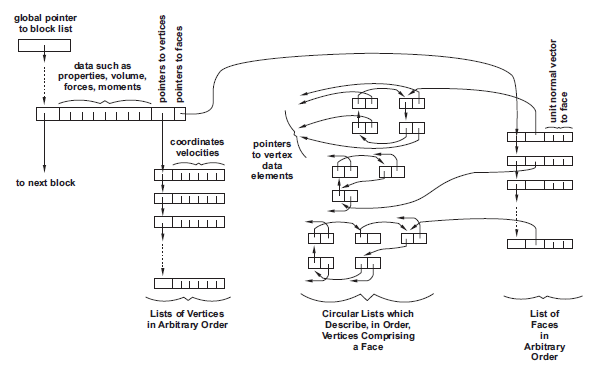
图 3：多面体刚性块体的简化数据结构。
从用户角度看，3DEC 接受凹块体，甚至空心或多连通块体。但由于凸块体具有诸多优点，程序内部会将凹块体分解成两个或多个凸块体，其中一个称为“主块体”，其余称为“从属块体”。为利用凸性，此处全部计算逻辑对从属块体的处理与主块体完全相同。不过，力学计算中，将主块体和从属块体组成的整体视为一个块体，确定共同的重心、质量等。下文将利用凸性说明若干过程的合理性，但这并不限制程序处理任意形状块体的能力。
接触的表示——每对相接触或间隙足够小的凸刚性块体，都分配一个数据单元。该单元对应两块体之间的实际接触，包含摩擦、剪切力等相关数据。每个接触划分为若干子接触，并在子接触处施加相互作用力。刚性和可变形块体均创建子接触，相关逻辑见块体间相互作用（Interaction between Blocks）。单个接触单元包含指向一系列子接触的指针。
图 4（Figure 4） 显示每个接触单元的主要内容。每个接触既全局连接其他所有接触，也局部连接构成该接触的块体对。图 5（Figure 5） 用四块体系统展示体现这种连接的数据结构。每个接触可根据需要通过多种方式访问。在更新全部力的主计算循环中，逐一扫描所有接触很方便，这通过附着于全局指针的链表完成。访问某接触后，由其块体指针识别组成块体。接触检测和重新分配期间，知道某块体现有接触十分方便。每个块体的局部列表贯穿该块体全部接触。例如，沿块体 C 的指针访问（图 5（Figure 5）），可找到块体 C 的三个接触。
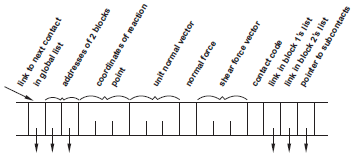
图 4：接触数据单元的主要内容。
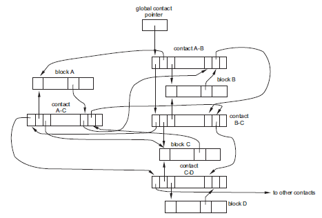
图 5：四块体示例的局部与全局接触连接。
相邻块体识别
计算机程序研究一对块体的相对几何之前，必须先识别候选块体对。检查所有可能组合的计算时间难以承受，因为搜索时间随块体数平方增长。二维情况下，可建立自动表示块体间空隙的“规范”数据结构（Cundall 1980），随后扫描块体周围局部空隙，即可方便地获得全部潜在接触块体列表。该方案搜索时间随系统块体数线性增长，但遗憾的是，其数据结构不能直接推广至三维。分别模拟圆盘和球体的 BALL 与 TRUBAL 程序采用一种形式稍欠优雅但可能更稳健的方案（Cundall 和 Strack 1979a）。此处采用该方法识别相邻块体。
空间胞元映射与搜索——将包含块体系统的空间划分为长方体三维胞元。将每个块体映射到其“包络空间”所占据的一个或多个胞元。包络空间定义为能包住块体、各边平行坐标轴的最小三维箱体。每个胞元以链表形式存储映射到其中的所有块体地址。图 6（Figure 6） 展示二维空间的映射逻辑，因为三维概念难以图示。全部块体映射后，识别某块体的相邻块体很简单：对应其包络空间的胞元中，包含附近全部块体的条目。通常将这一“搜索空间”沿各方向扩展一个容差，以找到给定容差内全部块体。注意，每个块体的映射与搜索时间取决于块体尺寸和形状，而不取决于系统块体总数。因此，只要胞元体积与平均块体体积成比例，相邻检测总计算时间就与块体数成正比。
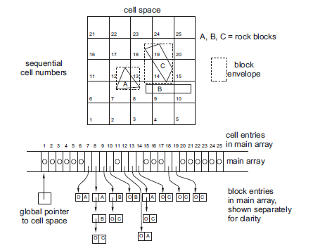
图 6：二维空间中块体映射到胞元空间的示例。
由于可能遇到的块体形状多样，很难给出最佳胞元尺寸公式。极端情况下，如果只用一个胞元，全部块体都会映射到其中，搜索时间按平方增长。胞元密度增大时，对某块体检索出的非相邻块体数减少。达到一定程度后，进一步增大胞元密度不再有利，因为检索出的全部块体都已是相邻块体。但继续提高胞元密度，会增加映射和搜索时间。因此，为同时减少这两类时间浪费，最佳胞元密度应大致为每个块体对应一个胞元。
相邻搜索的触发方案——模拟过程中，块体运动后会重新映射，并检测其与新相邻块体的接触。该过程由块体累积运动触发：变量 \(u_{acc}\) 在每次重新映射后置零，并在每个时间步按以下方式更新：
其中，\(du\) 为某顶点的增量位移，\(\max\{ \}\) 函数对块体全部顶点取值。
当 \(u_{acc}\) 超过 CTOL 不确定 CTOL 应采用何种字体时，启动重新映射与接触检测。CTOL 为预设容差，可通过 列出区块基本信息命令（block list information） 命令查看，并通过 block contact tolerance 命令修改。接触检测在各方向均比块体包络大 2\(\cdot\)CTOL 的搜索体积内进行，以允许块体及潜在相邻块体的最大运动。如果某块体试图移出胞元空间，即全部胞元覆盖的总体积，则将受影响方向的胞元空间重新定义为扩大 10%。此时全部块体均重新映射。
CTOL 也用于确定接触的创建或删除。如果发现两个块体的间隙小于或等于 CTOL，就创建接触。相反，如果现有接触的间距增大到超过 CTOL，就删除接触。上述逻辑确保所有潜在接触的数据结构在实际接触发生前建立完毕，也确保只对运动块体搜索接触，不在相对不活跃块体上浪费时间。
接触检测
方案要求——两个块体被识别为相邻后，需要检测是否接触。如果不接触，则必须确定其最大间隙，以便忽略间距超过一定容差的块体对。对于间距小于容差但尚未相接的块体对，仍建立“接触”。虽然该接触不传递荷载，但在每个力学计算步均被跟踪。这样，块体一旦相接，相互作用力立即开始作用。（注意，接触检测过程较耗时，并非每个力学步都执行。）接触检测逻辑还必须提供单位法向矢量，定义可能发生滑移的平面。两个块体相对运动时，该单位法向应表现良好，即方向连续变化。计算逻辑还应能合理处理某些极端情况，例如下图所示情况。
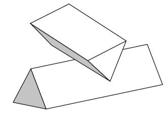
图 7：难以确定接触法向的极端情况。
最后，接触检测逻辑必须快速识别接触类型，例如面—边或顶点—面。这些信息用于为每个接触选择最合适的物理规律。总之，接触检测逻辑必须尽快提供接触类型（相接时）、最大间隙（未相接时）和单位法向矢量。首先介绍一种直接方法，指出其困难，再介绍更好的方案。
两块体之间接触的直接检验——最简单的方法是检验全部可能的相互作用。三维块体有许多接触方式，例如可检测第一块体的每个顶点与第二块体的每个顶点、边和面的接触，依此类推。若第一块体 A 有 \(v_A\) 个顶点、\(e_A\) 条边和 \(f_A\) 个面，第二块体 B 有 \(v_B\) 个顶点、\(e_B\) 条边和 \(f_B\) 个面，则不同接触组合数量为
例如，两个立方体会产生 676 种接触可能性。实际无须如此多的检验，因为某些接触类型是其他类型的极限情况。似乎只需检查顶点—面和边—边接触，其他类型可按以下方式识别：
- 同一位置存在三个或更多顶点—面接触时，可识别顶点—顶点接触；
- 两个顶点—面接触重合时，可识别顶点—边接触；
- 两个块体之间存在两个边—边接触时，会形成边—面接触；以及
- 三个或更多边—边接触，或三个或更多顶点—面接触，可识别面—面接触。
即使采用这一缩减后的检验集合，组合数量仍为
对于两个立方体示例，该数量为 240。
以下两点与后文有关。第一，检验数量随块体平均边数、顶点数或面数平方增长。第二，检验不一定简单。例如，顶点—面检验不仅要检查顶点位于面上方还是下方，还需证明顶点位于构成该面多边形的投影周界内。快速完成这一点并不容易。
按照上述要求，检测过程中逐一检查各种类型，即可确定接触类型。单位法向在某些情况下容易确定，例如所有涉及面的情况；其他情况下则较困难，尤其边—边、边—顶点及顶点—顶点接触，法向可能未定义。此外，接触从一种类型跳变为另一种时，无法保证法向平滑演化。采用这种直接检验方案，确定任意两个未相接块体的最大间隙也并非简单任务。为解决这些困难，提出了下述新方案。
公共平面的概念——前节中的困难源于必须直接比较两个任意多面体。如果能将问题分为两部分，许多困难便会消失：（1）确定一个以某种方式平分两块体之间空间的“公共平面”；（2）分别检验每个块体与公共平面的接触。“公共平面”类似于松放在两个块体之间的金属板，见图 8（Figure 8）。若紧握两块体并缓慢靠近，块体会使金属板偏转，最终接触时，金属板将在某一特定角度被夹住。
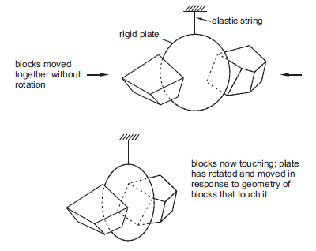
图 8：公共平面随块体几何形状定位的直观示意。
只要块体为凸体，无论形状和方位如何，金属板最终位置都可定义两块体的滑动平面。进一步设想，即使未相接，金属板也受到块体排斥。两块体靠近时，金属板将位于二者中间，并与两者保持最大距离。于是，将块体到板的距离相加，便可方便地得到块体间隙。事实上，如果能构建与金属板等效的数值对象，即上述公共平面，很多事情都会更容易。暂且假设已有这样的方法，接触检验便可从以下方面简化并加速。下文将公共平面简称为 c-p。
仅需利用点积进行简单顶点—平面检验。由于块体或子块体为凸体，见前文，只需统计两个块体顶点与平面重叠的数量，即可识别面接触和边接触。
检验数量与顶点数呈线性关系，而不是前述平方关系。由于分别检验块体 A 的顶点与 c-p，以及块体 B 的顶点与 c-p，检验数量为
(4)\[n = v_A + v_B\]对于两个立方体示例，检验数量为 16，而前述方法为 240。
无须检验潜在接触是否位于某个面周界以内。若两个块体均接触 c-p，则必然彼此接触。如果它们不接触，c-p 就不会接触任何一块，因为其定义是平分块体间空间。
接触单位法向等于 c-p 单位法向，无须附加计算。
由于 c-p 法向有唯一定义，消除了接触法向不连续演化的问题。c-p 法向可能快速变化，例如顶点—顶点接触，但不会因接触类型改变而跳变。
两个未相接块体的最小间隙很容易确定，即两块体至 c-p 距离之和。
公共平面定位算法——既然公共平面能简化并加快接触检验，就需要给出定位方法，并证明其额外开销不会超过接触检验获得的收益。c-p 定位和移动算法仅基于几何，与力学计算配合执行，默认每 10 步应用一次。算法表述为：
使 c-p 与最近顶点之间的间隙最大。
图 9（Figure 9） 展示符合上述算法的几个二维 c-p 示例。c-p 的任何转动或平移都会减小其与最近顶点间的间隙，或保持间隙不变。对于重叠块体，采用同一算法，但“间隙”和“最近”必须按负值情况下的数学含义理解，即间隙表示负重叠量，最近表示埋入最深。为便于理解，对重叠块体可将算法改述为：
使 c-p 与重叠量最大顶点之间的重叠量最小。
对于尚未识别为接触的两个块体，必须向算法提供起始条件。初始猜测是将 c-p 放在两块体质心中间，单位法向矢量由一个质心指向另一个质心：
其中：
\(Z_i\) = \(B_i - A_i\);
\(z^2\) = \(Z_i\)\(Z_i\);
\(n_i\) = c-p 单位法向；
\(C_i\) = c-p 参考点；
\(A_i\) = 块体 A 质心位置矢量；
\(B_i\) = 块体 B 质心位置矢量；以及
下标 \(i\)、\(j\) 和 \(k\) 取值为 1 至 3，表示矢量或张量分量。重复下标遵循求和约定。
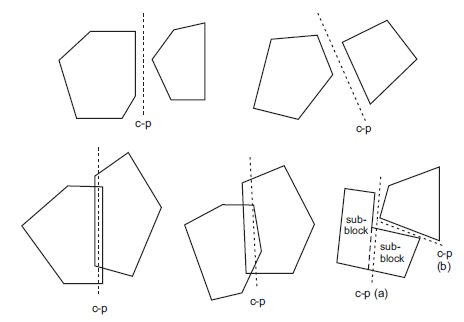
图 9：两个块体之间公共平面的示例。
随后，算法对 c-p 施加平移和转动，以最大化间隙或最小化重叠量。参考点 \(C_i\) 有两个作用：作为 c-p 转动中心；两块体接触时，作为法向力和剪切力的反力作用点。
公共平面的平移——平移分为 c-p 法向和切向两部分。法向平移通过扫描各块体、寻找其距 c-p 最近的顶点确定：
其中：
\(d_A\) 为至 \(A\) 上最近顶点的距离，存在间隙时为负；
\(d_B\) 为至 \(B\) 上最近顶点的距离，存在间隙时为正；
\(V_i\)（\(A\)）为 \(A\) 上某顶点的位置矢量；
\(V_i\)（\(B\)）为 \(B\) 上某顶点的位置矢量；
\(\min\){ } 为对 \(B\) 所有顶点取最小值；以及
\(\max\){ } 为对 \(A\) 所有顶点取最大值。
于是，c-p 参考点的移动量为
总间隙为 \(d_B - d_A\)。如果块体相接，即总间隙为负，则参考点成为接触力的反力作用点，由程序力学计算部分确定，见下文。对于未相接块体，将参考点移到最近两个顶点的中间：
其中：
\(V_i\)(\(A_{\max}\)) 为 A 上距 c-p 最近的顶点；以及
\(V_i\)(\(B_{\min}\)) 为 B 上距 c-p 最近的顶点。
公共平面的转动——c-p 平移可以一步完成，但转动必须迭代，因为随着 c-p 转动，块体上最近的顶点可能变化。单位法向可绕两个独立轴转动，因此间隙最大化相当于爬山搜索过程。任意选择两个正交轴，二者均与 c-p 单位法向垂直。单位法向沿这两个方向分别施加正负扰动，共四次扰动。若 \(p_i\) 和 \(q_i\) 为正交单位法向矢量，则对 \(n_i\) 的四种扰动为：
其中，\(z^2 = 1 + k^2\)，\(k\) 为决定扰动大小的参数。
首次创建接触时，参数 \(k\) 初设为 \(k_{\max}\)，对应五度的角度扰动。随后采用图 10（Figure 10） 所示迭代过程，搜索最大间隙。注意，最大间隙定义为 \(\max\){\(d_B\), -\(d_A\)}，其中 \(d_B\) 和 \(d_A\) 由式 (6) 与 (7) 给出。
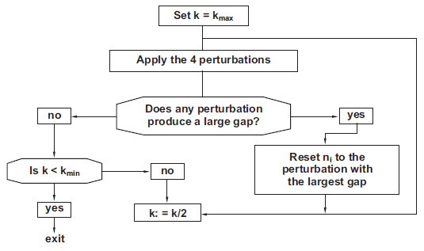
图 10：搜索最大间隙的迭代过程。
当最小幅度的四种扰动都使间隙减小时，迭代停止；最终单位法向就是产生最大间隙的方向。最小扰动 \(k_{\min}\) 对应 0.01 度角度变化。为防止迭代在鞍点过早终止，隔次迭代将扰动轴旋转 45 度。如果迭代任一阶段的间隙超过接触形成容差 CTOL，则停止迭代并删除接触。
对于已有接触，首先以 \(k\) = \(k_{\min}\) 尝试四种扰动。如果最大间隙没有增加，则不再处理；否则执行上述迭代。
力学循环中 c-p 的平移——接触存在作用力时，c-p 法向平移仍按式 (8) 执行。不过，还向 c-p 施加以下两种增量平移。
（1）刚体平移
附加平移的第一部分与两个块体在接触点处的平均运动有关：
其中，\(du_i\)(\(A\)) 和 \(du_i\)(\(B\)) 分别为块体 A 和 B 在接触点即参考点处的增量位移。
例如，若两块体以相同速度在空间中运动，c-p 参考点也会以这一速度移动。此时无须式 (8) 提供的修正。注意，式 (11) 的增量位移包含块体转动影响。
（2）相对转动
如前所述，假定 c-p 参考点为接触合力作用点。当接触平面上表面相对于下表面转动时，由于平面受载不均，接触合力作用点会移动。图 11（Figure 11） 说明该效应。参考点移动与两表面转动的关系，必然取决于接触面性质；若法向刚度与应力有关，还取决于当前法向应力。上述关系似乎属于材料属性，不能仅由几何因素推导。因此，在 3DEC 中，将参考点平移取为两块体相对角度变化乘以用户指定常数 \(K_T\)：
其中：
\(dT_k\)（\(A\)）为块体 A 的增量转动矢量；
\(dT_k\)（\(B\)）为块体 B 的增量转动矢量；以及
\(e_ijk\) 为置换张量。
上述定义的 \(K_T\) 具有长度量纲，但可能应按接触平面在 \(C_i\) 移动方向上的长度归一化。不过，恰当定义 \(K_T\) 之前，还需要更多室内试验数据。
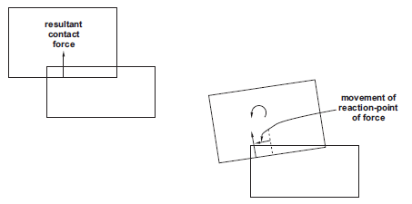
图 11：接触表面转动引起接触合力作用点移动的示意图（重叠量已夸大）。
（3）参考点移动的限制
由于参考点是接触力作用点，必须位于两个块体表面。应用式 (11) 和 (12) 后，对构成接触的两块体各个面检验参考点。如果位于任一面之外，则按以下方式将其移回该面方向：
其中：
\(n_i\)（\(f\)）为该面的外单位法向；以及
\(d\) 为该面至 \(C_i\) 的法向距离。
仅当 \(n_i\) 与 \(n_i\)（\(f\)）正交时，式 (13) 才能将 \(C_i\) 完全移回面上。其他情况下，重复使用该公式可达到收敛；由于每个计算循环均调用，因此会自动重复。图 12（Figure 12） 说明这一过程。如果 \(C_i\) 同时落在两个或更多面之外，例如角点或边附近，也会产生相同效果。
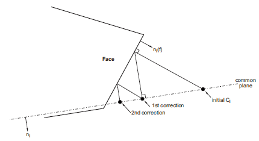
图 12：将参考点 Ci 移入块体边界内的过程。
公共平面的计算开销——为一对块体建立 c-p 所需操作数，与顶点数呈线性关系。式 (8) 平移修正的检验数量为 \(v_A\) + \(v_B\)。转动迭代的检验数量为 \(4N\) (\(v_A\) + \(v_B\))，其中 \(N\) 为迭代次数。因此，总检验数量为
该公式很难与直接检验接触方案对应的式 (1) 和 (2) 直接比较。对于已建立接触，c-p 方案优于直接检验方案，因为通常只需一次转动迭代即可确认 c-p 位置最优。但在初次形成接触时，试验发现迭代次数可能为 9 至 30。对于顶点较少的块体，c-p 方案建立接触条件所需检验次数多于直接方案。不过，综合考虑前述六项优点，整体仍更适合采用 c-p 方案。
接触类型——接触类型很重要，因为它决定接触力学响应。例如，边—面接触与面—面接触的行为不同。在岩石力学中，面—面接触被视为“节理”，重要变量是应力，而不是力。可根据每个块体有多少顶点接触 c-p 来分类。表 1（Table 1） 列出接触类型与各块体相接顶点数的关系。
对于面—面接触，必须定义接触面积，才能使用应力—位移关系描述接触面的力学行为。由于构成接触的两个面均为凸多边形，其公共接触区域也为凸且单连通的多边形。因此，公共面积计算虽较繁琐，但过程直接。
在 3DEC 中，面—面接触的相互作用由顶点—面或边—边类型的点表示，见块体间相互作用（Interaction between Blocks）。
| 相接顶点数 | 接触类型 | |
|---|---|---|
| 块体 A | 块体 B | |
| 0 | 0 | 无接触 |
| 1 | 1 | 顶点—顶点 |
| 1 | 2 | 顶点—边 |
| 1 | >2 | 顶点—面 |
| 2 | 1 | 边—顶点 |
| 2 | 2 | 边—边 |
| 2 | >2 | 边—面 |
| >2 | 1 | 面—顶点 |
| >2 | 2 | 面—边 |
| >2 | >2 | 面—面 |
块体间相互作用
上述方案同时适用于刚性和可变形块体。每对接触块体只确定一个公共平面，并只为该接触分配一个常规数据单元。若某块体面接触 c-p，则自动离散为子接触。对于刚性块体，通过面对面的三角剖分创建子接触，通常位于块体面顶点处。对于可变形块体，表面四面体网格单元的三角形面含有若干内部表面节点，每个节点具有三个独立自由度。此时，为面上每个节点创建子接触。
子接触跟踪块体之间的接触面力，以及滑移、分离等其他条件。定义两种子接触：顶点—面和边—边。为模拟面—面接触，每个子接触赋予面积，从而可以使用以应力和位移表示的标准节理本构关系，例如剪切方向的弹性加库仑摩擦，见库仑滑移节理模型（Coulomb-Slip Joint Model）。边—边子接触既模拟块体之间的边—边接触，也模拟 c-p 上边交点处的面—面和面—边接触。各子接触处的接触面位移，取为子接触位移减去相对面重合点的位移。每个子接触“拥有”的面积一般等于周围三角形面积的三分之一；但当子接触靠近相对块体的一条或多条边时，必须调整这一计算。
上述仅讨论接触面一侧的子接触。如果另一侧也是一个面，则应用相同条件：创建子接触，计算相对位移及相应力。两个块体相接时，上述接触逻辑相当于两组接触弹簧并联；此时将两组力均除以二，使整体接触面行为等于两组行为的平均。
前述 c-p 逻辑严格而言仅适用于具有平面面的凸块体，但可变形块体发生大应变时，可能不满足这些条件。实际应用主要模拟岩体，其中位移可能很大，但应变通常较小，此时逻辑仍可工作。但块体应变较大，例如超过 1% 时，可能需要修改方案。
目前，3DEC 不允许在同一问题中混用刚性和可变形块体。该逻辑既适用于块体间小位移相对运动，也适用于大位移。为处理大位移，相关顶点跨越另一块体的面边界时，程序会自动重新定位各子接触。默认每 10 步更新子接触位置和权重，也按相同周期检测新子接触和子接触类型变化。程序还允许避免突然删除关联顶点已滑出另一块体面的子接触。像二维程序 UDEC 一样，重新分配现有子接触力，以保证相邻状态之间平滑过渡。
三维运动与相互作用的力学计算
本节介绍三维离散元法的力学计算公式，讨论基于 Cundall 和 Strack（1979b）以及 Cundall 和 Hart（1985）此前发表的工作。首先介绍块体间力学相互作用的计算公式。子接触力更新（Sub-contact Force Update）和库仑滑移节理模型（Coulomb-Slip Joint Model）中描述的方案，同时适用于刚性和可变形块体。
随后，刚性块体运动（Rigid Block Motion）介绍刚性块体运动的力学计算。对于施加应力相对于完整岩石强度较低、且运动集中于结构面上的稳定性研究，这种运动描述已足够。
3DEC 还考虑块体可变形性和完整材料破坏。该计算形式将每个多面体块体细分为由常应变四面体单元组成的内部有限差分网格。求解采用显式大应变形式，块体材料可使用弹性和弹塑性模型。可变形块体逻辑与 Lemos（1987）的二维块体公式类似。其运动公式详见可变形块体运动（Deformable Block Motion）。
计算循环
3DEC 基于动力时域算法，使用显式有限差分法求解块体系统运动方程。Cundall（1987）证明，基于运动方程的求解方案，比忽略速度和惯性力的方案，例如逐次超松弛法，更适合揭示非连续系统潜在破坏模式。每个时间步均应用运动定律和本构方程。刚性和可变形块体均规定子接触力—位移关系。对运动定律积分，获得新的块体位置，进而得到接触位移增量或速度。随后利用子接触力—位移关系获得新的子接触力，并在下一时间步作用于块体。力学计算循环如下图所示。
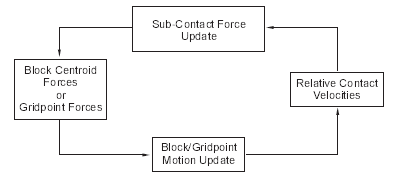
图 13：计算循环。
子接触力更新
三维接触检测与表示方案（A Scheme To Detect And Represent Contacts In 3D）介绍了更新块体接触相关几何参数的过程。将 c-p 单位法向作为接触法向 \(n_i\)，由块体 A 指向块体 B，并假设所有子接触均采用相同法向。
子接触两侧的相对速度，由关联子接触速度 \(V^V_i\) 和相对面对应点速度 \(V^F_i\) 获得。对于刚性块体，根据刚体运动方程计算速度，见式 (49)。对于可变形块体，使用式 (57) 计算位于块体面上的四面体网格单元顶点速度。
对于刚性块体，接触速度定义为子接触位置处块体 B 相对于块体 A 的速度，计算为
其中：
\(A_i\) 和 \(B_i\) 为块体 A 与 B 的质心位置矢量；
\(\dot x^A_i\) 和 \(\dot x^B_i\) 为块体 A 与 B 的平移速度矢量；
\(\omega^A_j\) 和 \(\omega^B_j\) 为相应角速度矢量；
\(e_ijk\) 为置换张量；以及
下标 \(i, j, k\) 取 1 至 3，表示全局坐标系中的矢量或张量分量。重复下标遵循求和约定。
随后，由接触速度插值得到与该刚性块体接触相关的各子接触速度。
对于可变形块体，可由面上三个顶点速度线性插值得到速度 \(V^F_i\)：
将顶点 \(a\)、\(b\) 和 \(c\) 的坐标变换到局部参考系，其中一轴垂直于面所在平面，即可计算权重因子。将顶点 \(a\) 的局部面内坐标记为 \(X^a\) 和 \(Y^a\)，则权重因子 \(W_a\) 为
另外两个因子可通过循环置换上标 \(a\)、\(b\) 和 \(c\) 获得。
单位法向 \(n_i\) 从块体 A 指向块体 B。因此，相对速度计算为
当顶点属于块体 A 时。否则计算为
对于刚性和可变形块体，子接触处相对位移增量均为
可沿 c-p 分解为法向和剪切分量。因此，法向位移增量为
以全局坐标表示的剪切位移增量矢量为
注意，c-p 单位法向 \(n_i\) 每个时间步均更新。为考虑 c-p 增量转动，必须修正以全局坐标表示的现有剪切力矢量 \(F^s_i\)：
其中，\(n^{old}_m\) 为 c-p 原单位法向。
由子接触位移增量计算弹性力增量。以压缩力为正时，法向力增量为
剪切力矢量增量为
其中，\(A_c\) = 子接触面积。子接触面积的确定方法是：为该点赋予一个区域，该区域由包含此子接触且位于 c-p 上的三角形面各自三分之一面积组成；随后计算该区域与另一块体位于 c-p 上各面的交叠面积。
对于面—面接触，\(A_c\) 取该面积的一半，以考虑两个块体顶点均创建子接触、从而形成两组并联“弹簧”的事实。
子接触总法向力和剪切力矢量更新为
以及
并按接触本构关系调整。3DEC 的基本本构模型定义为库仑滑移节理模型，详见库仑滑移节理模型（Coulomb-Slip Joint Model）。
表示块体 A 对块体 B 作用的子接触力矢量为
对于刚性块体，将子接触力加到作用于两块体质心的力和力矩中。因此，块体 A 的合力与合力矩更新为
其中，\(c_i\) 为子接触位置矢量。类似地，对于块体 B：
对于可变形块体，在子接触顶点一侧，将该力加到其他网格点力中；在面一侧，使用前述插值因子，将该力分配到三个顶点（\(a, b, c\)）：
库仑滑移节理模型
3DEC 内置的基本节理本构模型是库仑摩擦定律的推广。该定律对刚性块体间子接触和可变形块体间子接触的作用方式相似，同时考虑剪切和拉伸破坏，并包含节理剪胀。
在弹性范围内，行为由节理法向刚度 \(K_n\) 和剪切刚度 \(K_s\) 控制，如上述式 (24) 与 (25) 所述。
对于完整节理，即此前未发生滑移或分离的节理，法向拉力限制为
其中，\(T\) 为节理抗拉强度。
允许的最大剪切力为
其中，\(c\) 和 \(\phi\) 分别为节理黏聚力（应力量纲）和摩擦角。
子接触一旦开始发生拉伸或剪切破坏，就将抗拉强度和黏聚力取为零：
这种瞬时强度损失近似表示节理的“位移弱化”行为。按以下方式修正新接触力，注意法向压缩力为正：
对于拉伸破坏
对于剪切破坏
其中，剪切力大小 \(F^s\) 为
只有节理发生滑移时才产生剪胀。剪切增量大小 \(\Delta U^s\) 为
该位移产生的剪胀量为
其中，\(\psi\) 为剪胀角。
必须修正法向力，以考虑剪胀效应：
真实节理接近残余摩擦状态时，剪胀角会减小。在 3DEC 中，可通过规定极限剪切位移 \(U^s_{lim}\)，防止节理无限剪胀。当剪切位移大小超过 \(U^s_{lim}\) 时，将剪胀角设为零。
剪胀取决于剪切方向。如果剪切位移增量与总剪切位移同向，剪胀增加；若剪切增量方向相反，剪胀减小。
下图以节理初始黏聚力为零的情况说明该节理模型。
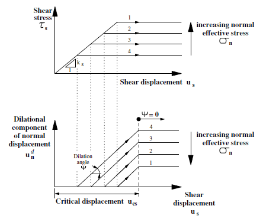
图 14：库仑滑移模型（节理黏聚力为零）。
3DEC 还提供更全面的位移弱化模型，即连续屈服节理模型，用于模拟节理在剪切作用下渐进损伤的内在机制。详见“3DEC 中的连续屈服节理模型（Continuously Yielding Joint Model In 3DEC）”。
刚性块体运动
单个块体的平移运动方程可表示为
其中：
\(\ddot x_i\) = 块体质心加速度；
\(\dot x_i\) = 块体质心速度；
\(\alpha\) = 黏性质量比例阻尼常数；
\(F_i\) = 作用于块体的合力，来自块体接触及所施加外力；
\(m\) 为块体质量；以及
\(g_i\) 为重力加速度矢量。
无阻尼刚体的转动运动由欧拉方程描述，其中运动参照物体主惯性轴：
其中：
\(I_1\)、\(I_2\) 和 \(I_3\) 为块体主惯性矩；
\(\dot \omega_1\)、\(\dot \omega_2\) 和 \(\dot \omega_3\) 为绕主轴的角加速度；
\(\omega_1\)、\(\omega_2\) 和 \(\omega_3\) 为绕主轴的角速度；以及
\(M_1\)、\(M_2\) 和 \(M_3\) 为作用于块体、相对于主轴表示的力矩分量。
刚性块体模型更适合准静力分析，此时可简化转动运动方程。由于速度较小，可略去上述方程中的非线性项，使方程解耦。此外，由于惯性力相对于块体所受总力很小，无须精确表示惯性张量。因此，3DEC 仅根据块体质心到顶点的平均距离，计算近似惯性矩 \(I\)。这样可将上述方程改为相对于全局轴表示。
加入黏性阻尼项后，方程变为
其中，速度 \(\omega_i\) 和总力矩 \(M_i\) 现均相对于全局轴表示。
采用中心有限差分过程对运动方程积分。以下表达式利用半时间间隔处的值，描述时刻 \(t\) 的平移和转动速度：
加速度计算为
将这些表达式分别代入平移和转动运动方程，即式 (44) 和 (46)，并求解时刻 \([t + (\Delta t/2)]\) 的速度，得到
其中：
\(D_1 = 1 - (\alpha {\Delta t \over 2})\)；以及
\(D_2 = {1 \over {1 + \alpha {\Delta t \over 2}}}\) .
平移和转动增量为
块体质心位置更新为
块体顶点的新位置为
对于连接块体组，仅对主块体进行运动计算，并修改其质量、惯性矩和质心位置，使其代表整组块体。确定主块体运动后，通过类似式 (52) 的表达式，计算从属块体质心和顶点的新位置。
每个循环完成块体运动更新后，将全部块体的合力 \(F_i\) 与合力矩 \(M_i\) 重置为零。
可变形块体运动
许多应用中，不能合理忽略各块体的变形，即不能假定块体刚性。3DEC 开发了完全可变形块体，允许模型中各块体发生内部变形。
可变形块体内部离散为四面体有限差分单元。块体变形的复杂程度取决于划分的单元数量。采用四面体单元，可以消除常应变有限差分多面体可能出现的沙漏[1]变形问题。“沙漏”一词源于网格内单元变形模式的形状。对于超过四个节点的多面体，存在不产生应变、因而也不产生反抗力的节点位移组合，结果是发生方向交替且不受阻止的变形。
四面体单元顶点为网格点，各网格点的运动方程写为
其中：
\(s\) 为包围集中在该网格点的质量 \(m\) 的表面；
\(n_j\) 为 \(s\) 的单位法向；
\(F_i\) 为施加到网格点的全部外力合力，来自块体子接触或其他来源；以及
\(g_i\) 为重力加速度。
网格点力由三项相加获得：
\(F_i^l\) 为所施加外部荷载。\(F_i^c\) 来自子接触力，仅存在于块体边界网格点。与该网格点相邻的两个面上的子接触力，均对该项有贡献。由于假定任意面上位移线性变化，面上子接触力的作用可由施加到面端点的静力等效力表示。最后，紧邻网格点的网格单元内部应力贡献计算为
其中：
\(\sigma_{ij}\) 为网格单元应力张量；以及
\(n_j\) 为轮廓 \(C\) 的外单位法向，该轮廓沿封闭多边形表面分布；该表面由平分汇聚到所研究网格点的各单元面的直线段定义。
在每个网格点计算节点合力矢量 \(\sum\ F_i\)。该矢量包含前述施加荷载以及重力体积力的贡献。重力 \(F_i^{(g)}\) 由以下表达式计算：
其中，\(m_g\) 为网格点集中重力质量，定义为与其相连的四面体质量各取三分之一后求和。若物体处于平衡或稳定流动状态，例如塑性流动，则节点上的 \(\sum\ F_i\) 为零。否则，节点按牛顿第二运动定律的有限差分形式加速：
其中，上标表示相应变量求值的时刻。
每个时间步中，应变和转动按通常方式与节点位移关联：
注意，由于采用增量处理，式 (58) 并不意味着仅限于小应变。
可变形块体本构关系采用增量形式，便于应用于非线性问题。方程的实际形式为
其中：
\(\lambda\) 和 \(\mu\) 为拉梅常数；
\(\Delta \sigma_{ij}^e\) 为应力张量的弹性增量；
\(\Delta \epsilon_{ij}\) 为增量应变；
\(\Delta \epsilon_v = \Delta \epsilon_{11} + \Delta \epsilon_{22}\) 为体积应变增量；以及
\(\delta_{ij}\) 为 Kronecker δ 函数。
可将非线性及峰后强度模型直接加入程序，无须等效刚度或初始应变等手段。矩阵型程序需要引入这些手段，以保持矩阵公式要求的线性。然而，显式程序的过程简单得多：每个时间步结束后，已知各网格单元应变状态；程序随后需要各单元应力，才能进入下一时间步。无论采用线性弹性关系，还是复杂非线性及峰后强度模型，应力均由应力—应变模型唯一定义。
3DEC 块体的基本破坏模型为采用非关联流动法则的莫尔—库仑破坏准则。还提供其他非线性塑性模型，块体材料模型说明见 i 本构模型（Constitutive Models）。
塑性坍塌的准确建模——3DEC 主要用于模拟岩体内部沿节理、断层等离散特征运动的机制。但许多问题还必须在模型中考虑完整材料破坏与坍塌，例如顶板坍塌或开挖侧壁剥落。
使用 i 本构模型（Constitutive Models）介绍的块体塑性模型时，必须认识到，3DEC 常应变四面体单元可能高估坍塌荷载。模拟正在坍塌的材料时，一个常见问题是塑性流动的不可压缩条件。这有时称为“网格锁定”或单元“过度刚硬”，Nagtegaal 等（1974）对此作了详细讨论。流动中必须满足网格局部不可压缩条件，从而导致单元过约束。
一种解决方法称为“混合离散”，见 Marti 和 Cundall（1982）。其原理是适当调整四面体应变率张量的第一不变量，使单元具有更大的体积变形自由度。[2]该不变量衡量常应变率四面体的膨胀速率。此方法在四面体离散之上叠加较粗的网格单元离散，并将某网格单元内特定四面体的应变率第一不变量，取为该单元全部四面体的体积加权平均值。图 15（Figure 15） 说明这一方法。图示特定变形模式下，各常应变率单元会发生与不可压缩塑性流动理论不相容的体积变化。但本例四面体集合即网格单元的总体积保持不变。混合离散使每个四面体都反映这一总体属性，从而使其行为与理论预测一致。
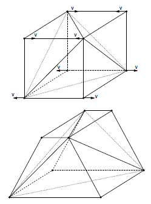
图 15：混合离散最能发挥作用的变形模式。
3DEC 提供混合离散，但仅适用于六面多面体。该过程不易推广到任意形状块体的离散，见 生成六面体区块单元命令（block zone generate hexahedra） 命令。
在 3DEC 中，混合离散（m-d）网格单元对应 \(n_t\) 个四面体组成的集合，图 16（Figure 16） 展示 \(n_t\) = 5 的情况。考虑某个 m-d 网格单元，首先估算其中局部编号为 \(l\) 的四面体应变率张量，再分解为偏量与体积部分：
其中，\(\eta^{[l]}\) 为偏应变率张量，\(\xi^{[l]}\) 为应变率第一不变量，
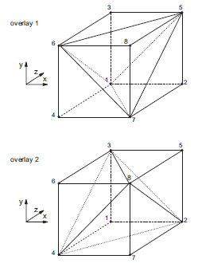
图 16：8 节点网格单元，由两套网格叠加，每套含 5 个四面体。
随后，以该网格单元全部四面体第一不变量的体积加权平均值，计算网格单元第一不变量：
其中，\(V^{[k]}\) 为四面体 \(k\) 的体积。最后，四面体应变率张量分量由以下关系计算：
采用剪胀本构关系时，屈服会引起平均法向应力变化。为保持方法一致，施加应变率增量后得到的应力张量第一不变量，也必须取网格单元的体积加权平均。首先估算网格单元内特定四面体 \(l\) 的应力张量，再分解为偏量与体积部分：
其中，\([s]^{[l]}\) 为偏应变率张量，\({\sigma}^{[l]}\) 为平均法向应力，
网格单元第一不变量取其全部四面体的体积加权平均值：
最后，四面体应力率张量分量按以下关系计算：
基于应变率和应力的节点力计算，综合两套叠加网格进行。采用两套网格的优点，是保证对称荷载下网格单元对称响应。混合离散在两套网格组合上执行，节点力则通过对两套网格结果取平均计算。
四面体网格的节点混合离散
常应变等低阶单元的一项困难是：分析对材料体积行为施加本构约束的问题时，会表现出“体积锁定”。典型情况是零剪胀塑性流动模拟。Nagtegaal 等（1974）解释，这一困难源于不可压缩条件使某些类型网格过约束。以 Prandtl 楔形体问题为例，采用常应变单元不仅可能高估承载荷载，甚至连极限承载力预测本身都可能不可靠。
一种解决方式是提高单元阶次。但按 Key 等（1999）等人提出的高阶单元公式增加自由度，可能出现沙漏变形模式，即不产生应变、因而不受应力抵抗的节点位移组合。这些模式在实际中不存在，往往必须在单元公式中加入复杂修正项才能防止。高阶单元方法的另一缺点是，使接触检测、施加边界条件时的边界识别，以及整体建模公式的算法更加复杂。
为避免这些困难，Marti 和 Cundall（1982）提出一种过程，既减少塑性流动约束数量，又保持低阶单元，从而防止不希望出现的沙漏模式。该技术称为“混合离散”，因为应力和应变张量的各向同性部分与偏量部分采用不同离散。本质上，偏量行为按三角形或四面体单元定义，而体积行为在称为网格单元的单元集合，即四边形或六面体上取平均。
技术说明
节点混合离散（NMD）是混合离散方案的变体，体积行为按节点而非网格单元取平均。该过程应用于三角形或四面体网格，不需要将这些单元组装成网格单元。此外，仍按常规在单元层面调用本构模型，不像 Bonet 和 Burton（1998）的平均节点压力（ANP）公式那样，为体积行为在节点层面调用。本方法包含对应变的节点混合离散和对应力的节点混合离散，下面分别讨论。
首先回顾 FLAC 和 3DEC 的一般计算顺序：
- 根据应力、施加荷载和体积力计算节点力。速度和位移线性变化，单元内应力和应变恒定。
- 应用运动方程，推导新的节点速度和位移。
- 根据节点速度推导单元应变率。
- 利用材料本构关系，由应变率推导新应力。
NMD 保持这一计算顺序，但按下文说明，对应变率（步骤 3 结束时）和应力增量（步骤 4 结束时）进行平均。
应变的节点混合离散
按通常方式由节点速度推导应变率 \(\dot \varepsilon_{ij}\)，随后分解为偏量分量 \(\dot e_{ij}\) 和体积分量 \(\dot e\)：
其中，\(\delta_{ij}\) 为 Kronecker δ。
节点体积应变率定义为周围单元数值的加权平均，计算公式为
其中，\(m_n\) 为节点 \(n\) 周围的单元，\(V_e\) 为单元 \(e\) 的体积。
获得节点体积应变率后，对节点值取平均，计算单元 \(\bar{\dot e}\) 的平均值：
其中，三角形的 \(d\) = 3，四面体为 4。
最后，将偏量部分与体积平均部分叠加，重新定义单元应变率：
调用本构模型，根据应变率和原应力推导新应力。
应力的节点混合离散
考虑增量形式的体积本构应力—应变关系，对于小增量，可线性化为以下形式：
其中，\(\dot e^p\) 表示塑性体积应变增量，对于剪胀或剪缩材料，该值不为零。相关节点力必须与定义单元运动学时的假设一致。为实现这一点，对 \(K\dot e^p\) 项采用下述节点混合离散过程。为方便起见，将 \(K\dot e^p\) 记为 \(\dot \sigma^p\)；采用这一约定，式 (72) 可表示为
\(\dot \sigma^p\) 是本构模型过程中计算的标准量。
对应力的节点混合离散技术，与应变所用方法类似。首先，将 \(\dot \sigma^p\) 的节点值计算为周围单元数值的加权平均：
获得节点值 \(\dot \sigma_n^p\) 后，对节点值取平均，计算单元 \(\bar{\dot \sigma^p}\) 的平均值：
其中，同样有三角形 \(d\) = 3，四面体为 4。
最后，在返回值中用 \(\bar{\dot \sigma^p}\) 替代 \(\dot \sigma^p\)，修正本构模型计算的应力：
显然，应力节点混合离散仅与剪胀或剪缩材料有关。
需要注意，NMD 中的平均操作独立于本构模型公式进行，后者不受影响。本构模型计算的塑性体积“应力修正” \(\dot \sigma^p\)，仅作为一个状态变量从本构模型返回。
还可证明，因平均过程采用这种方式，当分片试验中全部单元的 \(\dot \sigma\) 均匀且相等时，所得四面体公式会产生正确行为。
NMD 的节点平均过程，消除了线性速度单元过度约束的运动学条件。
高阶四面体单元
标准 3DEC 网格单元为 4 节点四面体，假定位移插值函数为线性。生成高阶四面体区块单元命令（block zone generate high-order-tetra） 命令将标准单元网格转为基于二次位移插值的 10 节点高阶四面体网格。为此，在每条网格单元边中点创建新节点。高阶单元公式允许在网格单元内部及表面表示二次位移场。但为进行接触计算和绘图，将块体边界近似为三角形面网格，10 节点四面体的每个面分成 4 个平面三角形。
高阶四面体网格单元基于标准有限元公式，类似于 20 节点六面体单元。10 节点四面体具有 4 个高斯点，在这些点计算应变和应力。单元公式与 3DEC 显式求解方法兼容。因此，通过对高斯点应力进行数值积分获得节点力，不计算刚度矩阵。每一步在各高斯点应用块体所选本构模型，获得新应力，与标准网格单元相同。
为便于输出和绘图，在每个 10 节点四面体上叠加由 4 个标准网格单元构成的网格。将高斯点应力传递给这些单元，因此仍可使用 3DEC 标准输出和等值线命令。
高阶单元可在较粗网格下提供更好的应力近似，也能为块体塑性问题提供更准确的解。因此，适合块体内部应力分布重要或块体显著屈服的问题。对于接触行为占主导的典型块状系统，因接触计算用平面三角形替代弯曲、变形块体面时存在近似，高阶单元可能不那么适合。
力学阻尼
离散元法使用力学阻尼求解两大类问题：静力即无惯性解，以及动力解。两类问题采用不同阻尼形式。静力分析的思路与 Otter 等（1966）提出的动力松弛法相似，对运动方程施加阻尼，使其在给定初始和边界条件下尽快达到力平衡。阻尼与速度成比例，即阻尼力大小与块体速度成比例。
标准动力松弛法使用速度比例阻尼时，主要有三个困难：
- 阻尼引入体积力，在“流动”区域中这些力是错误的，有时还会影响破坏模式。
- 最佳比例常数取决于矩阵特征值，除非进行完整模态分析，否则这些特征值未知。线性问题中，该分析几乎与动力松弛计算本身同样费时；非线性问题中，特征值可能未定义。
- 标准形式的速度比例阻尼同等作用于所有节点，即整个模型采用单一阻尼常数。许多情况下，模型不同部分表现可能不同，例如一个区域正在破坏，另一个区域稳定。此时不同区域应采用不同阻尼量。
为解决上述一个或多个困难，可以提出其他阻尼形式。土和岩石的自然阻尼具有滞回性；卸载曲线斜率高于加载曲线时，可能产生能量损失。数值上可以实现这种阻尼，但至少有两个困难。第一，对于复杂加载—卸载路径，滞回曲线的准确性质往往未知。土尤其如此，通常仅按正弦应力时程试验。Cundall（1976）报道，同样的能量损失由不同滞回环表示时，结果会很不相同。第二，可能发生“棘轮效应”，即物体每次振动循环都积累不可逆应变。因此避免采用这种阻尼，因为它增加路径依赖性，使结果更难解释。
3DEC 提供两种替代速度比例阻尼的形式。第一种是称为自适应全局阻尼的数值伺服机制，由 Cundall（1982）介绍，用于自动调整阻尼常数。采用黏性阻尼力，但不断调整黏性常数，使阻尼吸收功率与系统动能变化率保持固定比例。通过数值伺服机制调整黏性常数，力图使以下比值 \(R\) 等于给定值，例如 0.5：
其中：
\(P\) 为某节点的阻尼功率；
\(\dot E_k\) 为节点动能变化率；以及
\(\sum\) 表示对全部节点求和。
这种阻尼克服了上述困难（2），并部分克服（1），因为系统趋于稳定状态，即平衡或稳定流动时，动能变化率趋近于零，因此阻尼功率也趋近于零，见 Cundall（1982）。
为克服全部三个困难，3DEC 提供另一种阻尼形式，使节点阻尼力与不平衡力大小成比例。这一方案称为局部阻尼，阻尼力方向使能量始终耗散。对于可变形块体，以包含局部阻尼的下式替代运动方程式 (57)：
其中
其中，\(\alpha\) 为常数，在 3DEC 中设为 0.8，\(m_n\) 为节点质量。采用类似方程替代式 (49)，将局部阻尼施加于刚性块体平移速度和角速度。
这种阻尼相当于局部形式的自适应阻尼。原则上解决了前述三个困难：稳态条件下体积力消失；阻尼常数无量纲，且独立于属性和边界条件；阻尼量可逐点变化（Cundall 1987，第 134-135 页）。
Cundall（1987）比较了 UDEC 采用局部阻尼与自适应全局阻尼的计算，表明二者收敛到相同解。对于突然荷载变化或渐进破坏，例如大量块体崩落，不同区域需要不同阻尼量，此时可能更适合局部阻尼。一般观察到局部阻尼分析略呈欠阻尼。自适应全局阻尼是 3DEC 静力分析的默认阻尼模式，通过 damping auto 命令赋予；局部阻尼通过 damping local 命令赋予。
组合阻尼——对于稳态解包含显著均匀运动的情况，例如蠕变模拟，还提供局部阻尼的一种变体，称为组合阻尼。对于这一特殊情况，组合阻尼消除动能的效率高于局部阻尼。
式 (78) 所述阻尼形式，只有在速度分量变号时才激活。如果相对于需要衰减的振荡幅度存在显著均匀运动，就可能不发生“过零”，从而不产生能量耗散。
为建立对刚体运动不敏感的阻尼形式，考虑叠加在稳定运动之上的周期运动：
其中，\(V\) 为最大周期速度，\(\omega\) 为角频率，\(\dot u_\circ\) 为叠加的稳定速度。连续求导两次，并注意 \(m\ddot u = F\)，得到
式 (81) 中，\(\dot F\) 与 \(\dot u\) 的周期部分成比例，不含常数 \(\dot u_\circ\)。若运动为周期性，可在式 (78) 中用 \(-{\rm sgn}(\dot F)\) 替代阻尼力，得到相同阻尼力：
由于 \(\dot F\) 不涉及 \(\dot u_\circ\)，该方程对恒定速度偏移不敏感。实际中，若运动并非严格周期性，式 (82) 的效率低于局部阻尼力项 (79)。不过，等比例组合两式可获得良好结果：
如果系统除了需耗散的振荡运动之外，还存在显著刚体运动，则应使用这种阻尼。因此，组合阻尼是蠕变分析的默认阻尼模式。大多数情况下更适合局部阻尼，因为基于速度的组合阻尼通常比局部阻尼耗散能量更慢。
动力分析中，数值模拟阻尼应近似再现自然系统受动力荷载时的能量损失。如前所述，土和岩石的自然阻尼主要具有滞回性，即与频率无关。由于前述路径依赖问题，数值上难以再现。因此，3DEC 改用 Rayleigh 阻尼。该动力分析阻尼方法见动力分析（Dynamic Analysis）。
数值稳定性
离散元法的求解方案是条件稳定的。需要确定一个同时满足块体内部变形和块体间相对位移计算稳定性准则的极限时间步长。块体变形计算稳定所需时间步长估计为
其中：
\(m_i\) 为块体节点 \(i\) 对应的质量；以及
\(k_i\) 为该节点周围单元刚度的度量。
质量与刚度之比，与线性弹性系统最高固有频率 \(\omega_{\rm max}\) 有关。
刚度项 \(k_i\) 必须同时考虑完整岩石和不连续面的刚度，计算为两个分量之和：
右侧第一项表示与节点 \(i\) 相连的所有单元刚度贡献之和，估计为
其中：
\(K\) 和 \(G\) 分别为块体材料的体积弹性模量和剪切弹性模量；
\(b_{\max}\) 为最长网格单元边长；以及
\(h_{\min}\) 为四面体单元最小高度。
节理刚度项 \(k_ji\) 仅存在于块体边界节点，取为节理法向和剪切刚度中较大值，乘以与节点 \(i\) 相邻的两个块体面片面积之和。
对于块体间相对位移计算，类比简单单自由度系统，极限时间步长为
其中：
\(M_{\min}\) 为系统中最小块体的质量；以及
\(K_{\max}\) 为最大接触刚度。
frac 由用户提供，用于考虑单个块体可能同时接触多个块体的事实。frac 的典型值为 0.1。
离散元分析的控制时间步长为
质量（密度）缩放
虽然显式计算每个时间步都执行很快，但仍希望通过增大时间步长减少计算时间。一种方法是缩放固体材料的质量或密度。应注意，只要正确保持重力，惯性密度值与静态系统建模无关。对于近静态系统，即随时间仅缓慢演化的系统，可提高惯性密度，直到惯性力相对于其他系统力开始不可忽略。惯性力较低时，系统响应不会显著改变。希望提高密度的原因，是临界时间步长 \(\Delta t\) 由密度 \(\rho\) 决定，因而也可增大：
该过程称为密度缩放。只有模型非均匀，即不同部分自然时间步长不同时，密度缩放才可有效改善收敛。改变均匀模型密度不会改善收敛。
密度缩放是 3DEC 静力分析的默认模式。用户也可通过 区块力学质量缩放命令（block mechanical mass-scale） 命令选择和调整。指定局部阻尼（通过 block mechanical damping local）或自适应全局阻尼（通过 block mechanical damping global）时，会自动开启质量缩放。对多数问题，基于模型平均块体质量或网格单元质量的缩放因子，可实现最快收敛。
动力分析的局部质量密度缩放
密度缩放是 3DEC 准静力计算所用技术，可大幅提高大型问题求解效率。准静力问题中惯性力不重要，可以缩放网格点质量以优化数值收敛，而不影响解。但动力分析不能采用全局缩放。复杂节理系统在自动网格生成过程中会产生很小的块体网格单元，需要极小时间步长保证显式算法稳定，使某些动力求解极其耗时。不过，由于这些网格单元可能很小、质量极低，可以仅对它们进行一定密度缩放，使系统惯性变化可以忽略。3DEC 已实现这种局部密度缩放方案，由用户控制缩放量。已知程序计算的时间步长后，用户可通过 区块力学质量缩放命令（block mechanical mass-scale） timestep f 命令指定所需时间步长。JH：这是正确的替换吗？旧文档为“mscale part dt”。还请查看下一段的单个关键字引用，按需修正后删除此注释。
该命令规定，仅对系统施加达到 timestep f 所指定时间步长所必需的密度缩放。发出 执行计算时步（model cycle） 命令后，将输出信息，说明缩放的网格点质量数量及引入的附加质量。
参考文献
Bardet, J.-P., and R. F. Scott.《采用离散元法研究破裂岩体的地震稳定性》，载于《岩体研究与工程应用》（第 26 届美国岩石力学研讨会论文集），第 2 卷，第 139-150 页。波士顿：A. A. Balkema（1985）。
Bonet, J., and A. J. Burton.《用于近不可压缩显式动力应用的简单平均节点压力四面体单元》，Commun. Numer. Meth. Engng.，14，437-449（1998）。
Butkovich, T. R., O. R. Walton and F. E. Heuze.《离散单元建模对成坑现象的认识》，载于《岩石力学关键问题：第 29 届美国研讨会论文集》（明尼苏达大学，1988 年 6 月），第 359-368 页。鹿特丹：A. A. Balkema（1988）。
Cundall, P. A.《模拟块状岩体系统渐进大规模运动的计算机模型》，载于国际岩石力学学会研讨会论文集（法国南锡，1971），第 1 卷，论文 II-8（1971）。
Cundall, P. A.《显式时间计算的自适应密度缩放》，载于第四届国际岩土力学数值方法会议论文集（加拿大埃德蒙顿，1982），第 23-26 页（1982）。
Cundall, P. A.《岩石与土结构的离散元模型》，载于《工程岩石力学分析与计算方法》，第 4 章，第 129-163 页。E. T. Brown 主编。伦敦：George Allen and Unwin（1987）。
Cundall, P. A.《岩土力学中的显式有限差分方法》，载于《工程数值方法》（EF 岩土力学数值方法会议论文集，美国弗吉尼亚州布莱克斯堡，1976 年 6 月），第 1 卷，第 132-150 页（1976）。
Cundall, P. A.《三维离散元模型的建立——第一部分：大量多面体块体系统的接触检测与表示方案》，Int. J. Rock Mech., Min. Sci. & Geomech. Abstr.，25，107-116（1988）。
Cundall, P. A.《隧道支护的合理设计：利用交互图形输入输出几何数据的岩体行为计算机模型》，美国陆军工程兵团密苏里河分部，技术报告 MRD-2-74；NTIS 报告 AD/A-001 602（1974）。
Cundall P. A.《UDEC——用于节理岩体建模的广义离散元程序》，报告 PCAR-1-80，Peter Cundall Associates 报告，美国陆军欧洲研究办公室，合同 DAJA37-79-C-0548（1980）。
Cundall, P. A., and R. D. Hart.《用于节理岩体建模的广义二维与三维离散元程序开发》，Itasca 咨询集团；美国陆军工程兵团，杂项论文 SL-85-1（1985）。
Cundall, P. A., and R. D. Hart.《非连续介质数值模拟》，Engr. Comp.，9(2)，101-113（1992）。
Cundall, P. A. 等。《节理岩体的计算机建模》，美国陆军工程师水道试验站，密西西比州维克斯堡，技术报告 N-78-4（1978 年 8 月）。
Cundall P. A., and O. D. L. Strack.《颗粒集合的离散数值模型》，Geotechnique，29，47-65（1979b）。
Cundall, P. A., and O. D. L. Strack.《颗粒材料微观机制的建模》，载于《颗粒材料力学：新模型与本构关系》，第 137-149 页。阿姆斯特丹：Elsevier Scientific Publications, B.V.（1983）。
Cundall P. A., and O. D. L. Strack.《离散元法作为颗粒介质研究工具，第一部分》，明尼苏达大学土木与矿业工程系，提交美国国家科学基金会的报告，项目 ENG 76-20711（1979a）。
Detournay, C., and E. Dzik.《四面体单元的节点混合离散》，载于《FLAC 与岩土力学数值模拟》（第四届国际 FLAC 研讨会论文集，西班牙马德里，2006 年 5 月 29-31 日）。P. Varona 和 R. Hart 主编。明尼阿波利斯：Itasca，343-350（2006）。
Goodman R. E., and G. Shi.《块体理论及其在岩石工程中的应用》。新泽西州：Prentice-Hall（1985）。
Hahn, J. K.《刚体的真实感动画》，Computer Graphics，24(4)，299-308（1988）。
Hart, R., P. Cundall and J. Lemos.《三维离散元模型的建立——第二部分：大量多面体块体系统运动与相互作用的力学计算》，Int. J. Rock Mech., Min. Sci. & Geomech. Abstr.，25，117-126（1988）。
Hart, R. D., J. Lemos and P. Cundall.《块体运动研究：离散元法分析》，Itasca 咨询集团／Agbabian Associates，DNA-TR-88-34-V2（1987 年 12 月）。
Hart, R. D. 等。《采用离散元进行隧道预测：第二卷——计算机程序修改与验证》，DNA，技术报告 DNA-TR-90-56-V2（1990 年 12 月）。
Heuzé, F. E. 等。《硬岩爆炸分析：离散单元建模的能力》，劳伦斯利弗莫尔实验室，预印本 UCRL-JC-103498（1990 年 3 月）。
Hocking, G., G. G. W. Mustoe and J. R. Williams.《CICE 离散单元程序——理论手册》。科罗拉多州莱克伍德：Applied Mechanics Inc.（1985）。
Itasca Consulting Group Inc.《二维颗粒流程序与三维颗粒流程序》，4.0 版。明尼阿波利斯：ICG（2008）。
Itasca Consulting Group Inc.《通用离散元程序》，5.0 版。明尼阿波利斯：ICG（2011）。
Key, S. W.《三维滑动接触面的数据结构》，载于《计算力学 ’86：理论与应用》（国际计算力学会议论文集，日本东京，1986），第 V1-211 至 V1-216 页。东京：Springer-Verlag（1986）。
Key, S. W. 等。《适用于固体的低阶四面体有限元》，Int. J. Numer. Meth. Engng.，44，1785-1805（1999）。
Lemos, J.《用于节理岩体动力分析的离散元模型及其在坝基与断层运动中的应用》。博士学位论文，明尼苏达大学（1987）。
Lemos, J. V., R. D. Hart and P. A. Cundall.《用于节理岩体建模的广义离散元程序（主题报告）》，载于岩石节理基础国际研讨会论文集（瑞典 Björkliden，1985 年 9 月），第 335-343 页。瑞典吕勒奥：Centek Publishers（1985）。
Lorig, L. J., and P. A. Cundall.《采用离散元法模拟钢筋混凝土》，载于《混凝土与岩石断裂》，第 459-471 页。康涅狄格州贝瑟尔：SEM（1987）。
Marti, J., and P. A. Cundall.《用于准确求解塑性问题的混合离散过程》，Int. J. Num. Methods & Analy. Methods in Geomech.，6，129-139（1982）。
Nagtegaal, J. C., D. M. Parks and J. R. Rice.《完全塑性范围内数值准确的有限元解》，Comp. Meth. Appl. Mech.，4，153-177（1974）。
Otter, J. R. H., A. C. Cassell and R. E. Hobbs.《动力松弛法（论文 6986）》，Proc. Instn. Civ. Engrs.，35，633-656（1966）。
Papadopoulos, J. M.《受压接触不规则颗粒集合的增量变形》。博士学位论文，麻省理工学院机械工程系（1986）。
Plesha, M. E., and E. C. Aifantis.《具有微观结构岩石的建模》，载于《岩石力学——理论、试验与实践》（第 24 届美国岩石力学研讨会论文集，得克萨斯 A&M 大学，1983），第 27-35 页。纽约：Association of Engineering Geologists（1983）。
Potyondy, D. O., P. A. Cundall and C. Lee.《利用圆形颗粒黏结集合模拟岩石》，载于《岩石力学工具与技术》，第 1937-1944 页。鹿特丹：A. A. Balkema（1996）。
Shi, G.-H.《非连续变形分析——块体系统静力与动力的新数值模型》，劳伦斯伯克利实验室，提交 DOE OWTD 的报告，合同 AC03-76SF0098（1988 年 9 月）；另为加利福尼亚大学伯克利分校博士学位论文（1989 年 8 月）。
Walton, O. R.《地质材料的颗粒动力学建模》，劳伦斯利弗莫尔国家实验室，报告 UCRL-52915（1980）。
Walton, O. R. 等。《非弹性摩擦球体重力流的颗粒动力学计算》，载于《颗粒材料微观力学》，第 153-161 页。阿姆斯特丹：Elsevier Science Publishers（1988）。
Warburton, P. M.《具有任意数量自由面的任意多面体岩块的矢量稳定性分析》，Int. J. Rock Mech. Min. Sci. & Geomech. Abstr.，18，415-427（1981）。
Williams, J. R., and G. G. W. Mustoe.《离散系统分析的模态方法》，Computers & Geotechnics，4，1-19（1987）。
尾注
| [1] | “沙漏”一词源于网格中单元变形模式的形状。对于超过四个节点的多面体，存在不产生应变、因而也不产生反抗力的节点位移组合，结果是发生方向交替且不受阻止的变形。 |
| [2] | 该不变量用于衡量常应变率四面体的膨胀速率。 |
| 这些内容对您有帮助吗？… | FLAC3D © 2019, Itasca | 原文更新于 2020 年 10 月 8 日 |
| 版权与免责声明 | ||